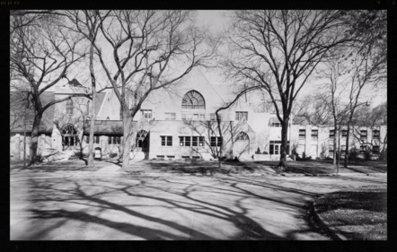

From the archives of Morgan Park Baptist Church - Historical sketch of the Morgan Park Baptist Church - Helen G. Laycock - 1927
Public religious work was begun in Morgan Park by Rev. J. Colbey, a Chicago Baptist Minister, in 1872. There was no building adequate to the needs of such work, so services were held in private homes, the railroad depot and the school house. The first building specifically a house of worship was erected in 1873-4 by the Chicago Baptist Union, or the site of the present church. The land for this building was donated by the Blue Island Land and Building Company, as a means of booming their new proposed suberb.
In this building were held the services of the Morgan Park religious Association, organized in 1875 to maintain public worship. Unoin services were conducted on alternate Sundays by Baptist and Methodist ministers.
Rev. W.W. Everts, Jr., and Rev. Frank M. Bristol, now a prominent Methodist Bishop, were the first pastors under this arrangement.
In 1876, the church property was legally transferred to the Morgan park Religious Association by the Chicago Baptist Union. The building itself was a box-like frame structure, dominated by a tall steeple which could be seen for several miles around. Older residents tell of watching this huge tower sway back and forth as great gusts of wind would sweep across the open prairies. Being very much of a neighborhood church, it thoughtfully provided sheltered sheds for the teams of horses which regularly drew wagon-loads of families from distant farms. Many a sermon was interrupted by the neighing and stamping of impatient teams.
In early 1877, the Chicago Baptist Theological Seminary was transferred to Morgan Park, bringing to the community a considerable number of Baptists - officers, professors, and students. In, May of that year, a meeting was held at the residence of Rev. T.W. Goodspeed to consider the formation of a Baptist Church. On September 28, a meeting for organization purposes was held in the church building, and the first Baptist Church of Morgan Park was then constituted, with forty-six members.